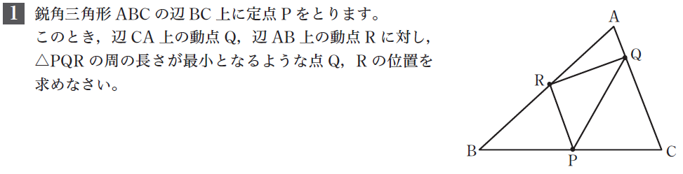
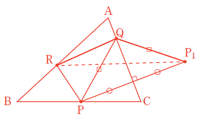

システム数学 思考力問題の考え方
幾何・統計編

考え方1
例えば，点Rを固定して点Qのみ動かすとき，PQ+QRを最小にする点Qを考える。
考え方2
点Pの辺ACに関する対称点を点P\({}_1\)とおくと，PQ+QR=P\({}_1\)Q+QR
P\({}_1\)と点Rが辺ACに関して反対側にあるので，これを最小にする点QはP\({}_1\)Rと辺ACの交点である。

考え方3
点PのACに関する対称点をP\({}_1\)，
点PのABに関する対称点をP\({}_2\)とおく。